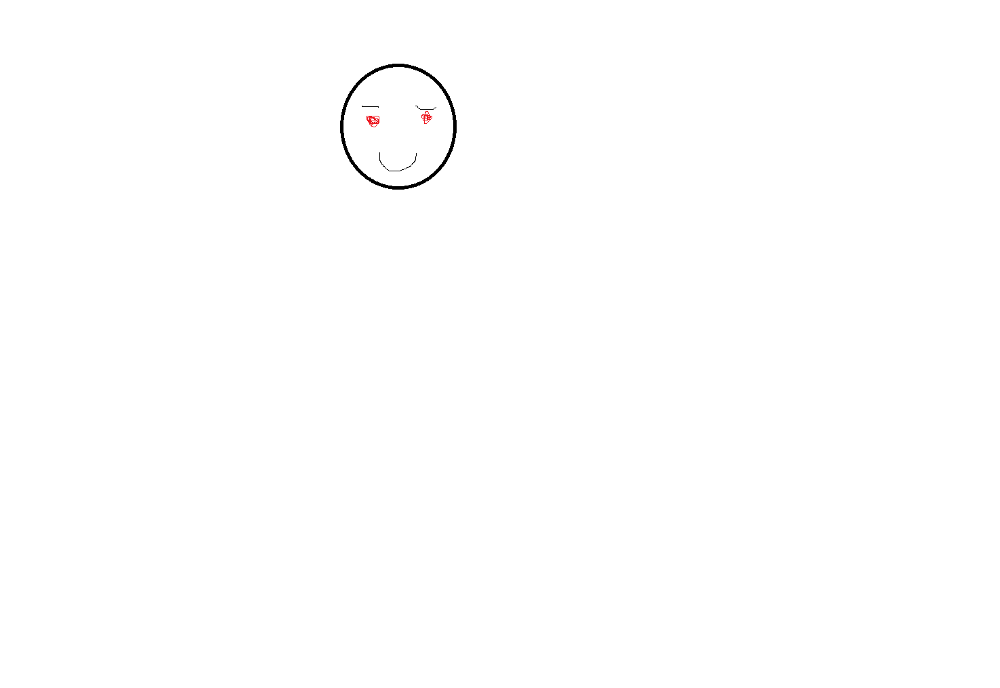

Minu Portfolio TTHK/TECHNOs õpitud ainetest
Siin on minu erialased ained ja tehtud tööd ning muud ülesannete väljundid.
Ained
Tarkvara Arendusprotsess
Avaneb eraldi lehel
Programmeerimis Alused
Materjalid / tööd
Programeerimine 1
Harjutused
Multimeedia
Projektid
TVeebirakenduse Alused
Frontend
Võrgurakenduste loomine alused
Back-end / võrk
Andmebaasisütemmenide alused 1 ja 2
SQL / andmemudel
Võrgurakendused
Serverid / protokollid
Mobiilirakendused
Rakendused
Kes ma olen?
Minu nimi
Stenver Lindma
Mida mina teen
Olen õpilane ja professionaalne koodi copija
Kust ma tulen?
Tulen Tallinnast - Mustamäelt
Pilt

GitHub Pages: hoia pilt kaustas
images
ja kasuta teed
./images/Nimetu.png